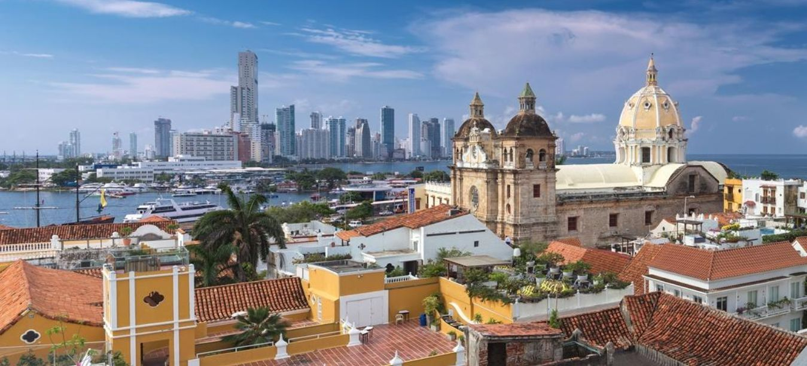

Nosotros
Yalisama es la nueva forma de ver los paquetes y rutas turísticas, olvidándose por completo de la manera rígida en la que estas se realizan actualmente, teniendo en cuenta que muchas veces no cumplen todas las expectativas de los turistas. La idea innovadora de esta plataforma consta de estudiar todos los atractivos turísticos, sitios que pueden ser potenciados y actividades que puedan realizarse en un lugar. Todos estos ítems serán ofrecidos de forma individual para que el turista o el usuario pueda elegir sus actividades y/o lugares que quiere visitar según sus interés y/o limitaciones. Yalisama brinda un servicio totalmente personalizado, con guías y animadores capacitados en pro de la inclusión y las buenas experiencias, generando empleo y prometiendo un medio ambiente sano y guías con responsabilidad social.
